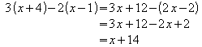

This page is outdated. You will be redirected to http://wiki.services.openoffice.org /wiki/Documentation/FAQ shortly. Use the new menu list on the right.
Documentation / User FAQ / Formula/Math / Previous-Next
How do I align my equations at the equality sign?
Currently Math does not have an alignment construction. Instead you can use a matrix.
For example to typeset the equation

you should enter the following:
matrix{
alignr x+y # {}={} # alignl 2 ##
alignr x # {}={} # alignl 2-y
}The empty braces around = are necessary because = is a binary operator and thus needs an expression on each side.
You can reduce the spacing around = if you change the inter-column spacing of the matrix:
- Select Format-Spacing.
- Click 'Category' and choose Matrixes in the pop-up menu.
- Now enter 0% under 'Column spacing'.
Here is another example using a different solution:
To typeset the equation

the trick is to use phantom as follows:
""3(x+4)-2(x-1)=3 x+12-(2 x-2) newline
""phantom {3(x+4)-2(x-1)}=3 x+12-2 x+2 newline
""phantom {3(x+4)-2(x-1)}=x+14The effect of the empty quotation marks is to left justify the line - a line starting with text (even an empty text) will always be left justified.
You can replace "" with alignl.